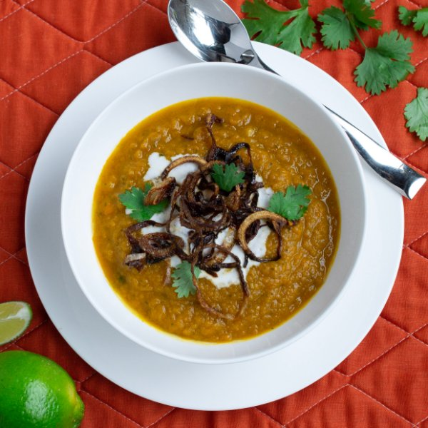

Spicy Thai Coconut Pumpkin Soup

Nutrition (per serving)
532.1 kcalCalories
9.8 gProtein
39.8 gCarbs
41.6 gFat
Full nutrition table
| Calories | 532.1 kcal |
| Total fat | 41.6 g |
| Saturated fat | 33.9 g |
| Trans fat | 0.3 g |
| Cholesterol | 15.5 mg |
| Sodium | 128.9 mg |
| Carbohydrates | 39.8 g |
| Fiber | 7.1 g |
| Sugars | 22.3 g |
| Protein | 9.8 g |
| Potassium | 1035.6 mg |
| Calcium | 92.4 mg |
| Iron | 3.7 mg |
| Vitamin A | 31.1 IU |
| Vitamin C | 22.2 mg |
| Vitamin D | 4.3 IU |
Cookware
Ingredients
- 2 mediumcarrots
- 32 fl ozchicken or vegetable broth
- 1 small bunchcilantro
- 1 (13.5 fl oz) cancoconut milk
- 2 clovesgarlic
- 2 (1 inch) piecesginger root
- 1lime
- 1 (15 oz) canpure pumpkin purée
- 2shallots
- 2 mediumyellow onions
- black pepper
- butter, unsalted
- cayenne pepper
- honey
- salt
- virgin coconut oil
Steps
- Heat a large pot over medium heat.
- Meanwhile, peel and small dice onion. Trim off and discard the root ends of the garlic and press or mince.2 medium yellow onions
2 cloves garlic - Once the pot is hot, add coconut oil and swirl to coat the bottom. Add the onion and garlic to the pot.2 tbsp virgin coconut oil
- Wash and peel the carrots, then trim off the ends. Using a box grater, coarsely grate and add to pot.2 medium carrots
- Wash the cilantro and shave the cilantro leaves off the stems. Chop the stems into small pieces and add to the pot. Mince the leaves and set half aside for garnish, add the rest to the pot.1 small bunch cilantro
- Season mixture with salt and pepper. Cook until all vegetables have softened, 3-4 minutes.1 tsp salt
½ tsp black pepper - Reduce heat to low. Wash, peel and mince or grate the ginger. Add to the pot.2 (1 inch) pieces ginger root
- Add pumpkin, honey and cayenne pepper, stirring to combine.1 (15 oz) can pure pumpkin purée
2 tbsp honey
½ tsp cayenne pepper - Shake can of coconut milk vigorously before opening. Add to the soup, reserving a few tablespoons for garnish.1 (13.5 fl oz) can coconut milk
- Add broth and bring to a boil. Reduce heat and simmer stirring occasionally, 8-10 minutes.32 fl oz (4 cups) chicken or vegetable broth
- Meanwhile, melt butter and oil over medium heat in a small saucepan.2 tbsp butter, unsalted
2 tbsp virgin coconut oil - Peel and thinly slice the shallots into rings. Add to pan breaking up as you go.2 shallots
- Turn heat up to medium-high. Cook until shallots are starting to darken around the edges, about 2 minutes. Reduce heat to low and continue to cook until golden brown and crispy, 2-3 minutes more. Watch carefully as they can burn easily.
- Transfer shallots to a paper towel-lined plate and discard oil. Season with salt.⅛ tsp salt
- Using an immersion (hand) blender, purée the soup until smooth.
- Wash and cut the lime into wedges.1 lime
- To serve, ladle soup into bowls. Top with a swirl of coconut milk, crispy shallots, cilantro leaves and a squeeze of lime. Enjoy!